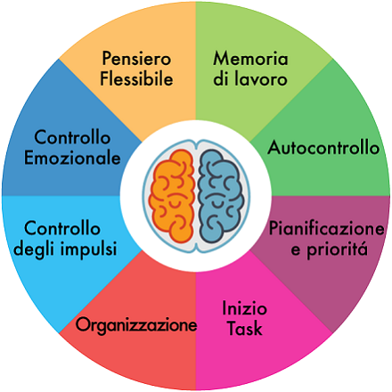

Funzioni Esecutive
Le funzioni esecutive in età evolutiva.
Cosa sono le Funzioni Esecutive ?
Le funzioni esecutive sono un insieme di abilità cognitive che ci permettono di pianificare, organizzare, prendere decisioni e regolare il nostro comportamento in modo adattivo. Esse includono capacità come l’attenzione selettiva, la memoria di lavoro, il controllo degli impulsi e la flessibilità mentale. Grazie alle funzioni esecutive, possiamo stabilire obiettivi, monitorare i nostri progressi e adattarci a situazioni nuove o complesse. Quando queste funzioni sono compromesse, possono sorgere difficoltà nella gestione delle attività quotidiane, nella concentrazione o nel raggiungimento di obiettivi a lungo termine. Fortunatamente, attraverso esercizi mirati, strategie organizzative e supporti esterni, è possibile rafforzarle e migliorarne l’efficacia.
Perché È importante conoscere le Funzioni Esecutive ?
La conoscenza delle funzioni esecutive riveste un ruolo fondamentale in relazione alla qualità di vita dell’individuo e del suo contesto familiare e assistenziale. In primo luogo, consente il riconoscimento precoce di eventuali alterazioni rispetto al funzionamento atteso. È infatti frequente che cambiamenti cognitivi vengano erroneamente attribuiti al fisiologico processo di invecchiamento, quando possono invece rappresentare manifestazioni iniziali di condizioni suscettibili di valutazione e intervento. Un’adeguata comprensione dei processi cognitivi contribuisce inoltre alla riduzione di ansia e incertezza, favorendo un approccio più consapevole alle difficoltà emergenti. Ciò permette di orientare in modo appropriato la richiesta di assistenza, di partecipare attivamente ai percorsi diagnostici e riabilitativi e di instaurare una comunicazione più efficace con i professionisti sanitari. Nel contesto familiare e assistenziale, tali conoscenze assumono un valore particolarmente rilevante. Esse facilitano l’interpretazione dei cambiamenti comportamentali, supportano l’adozione di strategie di gestione più adeguate e promuovono il mantenimento di atteggiamenti empatici e adattivi. Inoltre, consentono di identificare con maggiore tempestività la necessità di una valutazione specialistica o di una revisione del piano di cura.
Funzioni Esecutive: Il Direttore d'orchestra
Le funzioni esecutive sono processi cognitivi di alto livello che ci permettono di pianificare, organizzare, avviare e portare a termine compiti complessi. Possono e ssere paragonate a un “direttore d’orchestra” del cervello, che coordina e supervisiona le altre funzioni cognitive per il raggiungimento di obiettivi specifici. Senza funzioni esecutive efficienti, potremmo sapere cosa fare, ma non come, quando o in quale ordine farlo. Queste funzioni sono principalmente associate ai lobi frontali, in particolare alla corteccia prefrontale. Si tratta di una delle aree cerebrali che maturano più tardi — intorno ai 25 anni — ed è anche tra le più vulnerabili ai processi di invecchiamento e alle malattie neurodegenerative. Le funzioni esecutive non costituiscono un sistema unitario, ma un insieme di abilità interconnesse che operano in modo flessibile in base alle richieste della situazione. Tra queste, la pianificazione consente di definire obiettivi e individuare i passaggi necessari per raggiungerli. L’organizzazione permette di strutturare informazioni e risorse in modo coerente ed efficiente. La flessibilità cognitiva (o shifting) rende possibile modificare strategia quando quella in uso non è efficace, adattando il pensiero a nuove condizioni. Il controllo inibitorio, invece, permette di sopprimere risposte automatiche inappropriate e di resistere a distrazioni o impulsi. Altre componenti fondamentali includono l’iniziazione, che consente di avviare un compito senza procrastinazione eccessiva, e il monitoraggio, che permette di valutare e correggere il proprio comportamento durante l’esecuzione. La memoria di lavoro, spesso considerata parte integrante delle funzioni esecutive, consente di mantenere e manipolare temporaneamente le informazioni necessarie per svolgere compiti complessi. Infine, la metacognizione permette di riflettere sui propri processi di pensiero e apprendimento, favorendo un maggiore controllo consapevole delle proprie azioni cognitive.
Funzioni Esecutive: Componenti chiave
Pianificazione
Stabilire obiettivi e progettare strategie per raggiungerli.
Organizzazione
Strutturare informazioni e compiti in modo logico ed efficiente.
Flessibilità Mentale
Adattare pensiero e comportamento a nuove situazioni.
Controllo Inibitorio
Sopprimere impulsi e resistere alle distrazioni.
Presa di Decisioni
Valutare opzioni e scegliere il corso d’azione migliore.
Iniziazione
Iniziare i compiti senza eccessivo ritardo.
Funzioni Esecutive in azione

Le funzioni esecutive sono presenti in quasi tutte le attività che richiedono pianificazione e autocontrollo. Pianificare una vacanza, ad esempio, coinvolge molteplici funzioni esecutive: stabilire l'obiettivo (dove andare), ricercare opzioni, prendere decisioni su budget e date, organizzare prenotazioni e documenti, mantenere la flessibilità se sorgono cambiamenti e avviare le azioni necessarie con sufficiente anticipo. Nel lavoro, le funzioni esecutive ci permettono di prioritizzare i compiti, gestire il tempo in modo efficace, mantenere la concentrazione nonostante le interruzioni e adattare le nostre strategie quando affrontiamo sfide inaspettate. In casa, ci aiutano a mantenere le routine, coordinare gli orari familiari, gestire le finanze e completare progetti che richiedono più passaggi. Anche attività apparentemente semplici richiedono funzioni esecutive. Preparare una cena per gli invitati implica pianificare il menù considerando preferenze e restrizioni alimentari, organizzare l'acquisto degli ingredienti, coordinare i tempi di cottura dei diversi piatti affinché siano pronti simultaneamente e adattare il piano se qualcosa non va come previsto. La complessità di queste attività quotidiane dimostra quanto siano fondamentali le funzioni esecutive per l'indipendenza e il funzionamento quotidiano.
Quando le Funzioni Esecutive falliscono
Disorganizzazione
Difficoltà a mantenere gli spazi ordinati, perdita frequente di oggetti e problemi nel strutturare informazioni o pianificare attività.
Impulsività
Tendenza ad agire senza considerare le conseguenze, difficoltà ad aspettare il proprio turno e a controllare interruzioni nelle conversazioni o decisioni affrettate.
Rigidità Mentale
Difficoltà ad adattarsi ai cambiamenti, tendenza a perseverare in strategie inefficaci e resistenza verso nuove idee o approcci.
Procrastinazione
Difficoltà ad iniziare i compiti, soprattutto quelli complessi o poco piacevoli, con tendenza a rimandare responsabilità importanti.
Gestione del Tempo
Difficoltà a stimare il tempo necessario, frequenti ritardi e problemi nel rispettare scadenze o completare i compiti.
Relazioni Interpersonali
Difficoltà nel controllo delle emozioni e dei comportamenti sociali, con possibili ripercussioni sulle relazioni, sul lavoro e sulla capacità di mantenere abitudini sane.
Conclusioni
Le difficoltà nelle funzioni esecutive possono manifestarsi in vari modi, come problemi di pianificazione, procrastinazione, difficoltà a mantenere la concentrazione o incapacità di adattarsi a situazioni nuove. Questi deficit possono influenzare negativamente la vita quotidiana, il lavoro e le relazioni. Tuttavia, esistono strategie per compensarli: l’uso di liste e promemoria, la suddivisione dei compiti complessi in passi più piccoli, esercizi di memoria e attenzione, tecniche di gestione del tempo e l’adozione di routine strutturate possono migliorare notevolmente l’efficacia delle funzioni esecutive. Inoltre, la pratica costante, l’auto-riflessione e, se necessario, il supporto di professionisti come psicologi o logopedisti possono aiutare a sviluppare strategie personalizzate per affrontare queste difficoltà.